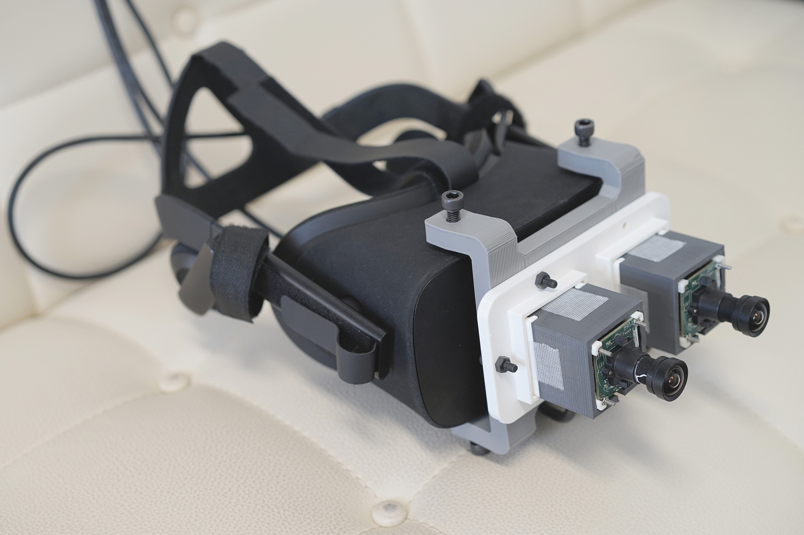
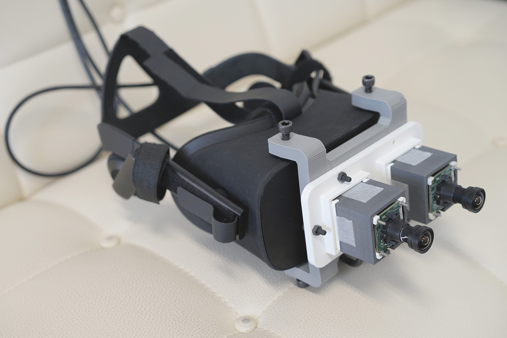

Limitless Oculus
Visual Expansion by Animal-Inspired Visuomotor Modification
基于仿生灵感修改视觉运动协调实现的视觉扩张


Humans are trapped in their limited senses. The human vision was relatively narrow and weak, comparing to the variety of animal superior abilities. Through my investigation, it was figured out that the human musculoskeletal systems, especially the neck, were a factor limiting the spatial range of vision. In order to help human overcome part of those limitations, I proposed the animal-inspired concept called Limitless Oculus. That was to substitute or modify the original visuomotor coordination of human, with a certain artificial mechanism. The mechanism, orienting the vision, was modified and designed to be programmable and customizable. The benefits aimed to promote the flexibility of the spatial orientation of vision, and hence achieve visual expansion and substitution. Besides, the concept had more possible applications with a variety of modifications and mechanisms. The method had physiological and cognitive influence, so it can not only be a tool but also change human mind. Two prototypes were presented. Then I conducted experiments to evaluate the performance of the prototypes, and prove the feasibility of the concept. The result indicated that the spatial range of vision was expanded, while the speed of the scan and response could also be augmented in a certain range.
Supervisor: Prof. Kouta Minamizawa, Sub-supervisor: Prof. Kai Kunze, Co-viewer: Prof. Ishido Nanako
人类被自身的感觉所困。与非人类生物多样的超常能力相比，人类的视觉相对狭窄和微弱。根据我的调研，以颈部为代表的人的肌肉骨骼系统是限制视觉空间范围的一个因素。受非人类生物的启发，本文提出Limitless Oculus概念，以期帮助人类突破一部分生理限制。即是用特定的人造机制或者人造映射来代替人类原本的视觉-运动协调机制。这类协调机制控制着视觉的朝向，经过此概念的修改和设定，则成为可编程的和可定制的。此概念的积极意义在于提高视觉空间朝向的灵活性，并因此实现视觉扩张和视觉代替。采用不同机制会让这个概念有更多的可能性和应用。此外，此方法影响生理层面和认知层面，故可以改变人类的思维方式。此处展示两个原型设备。然后本文使用实验来评估这些原型设备的性能，证明此概念的可行性。结果表面视觉可达到的空间范围得以扩大，同时在特定范围内扫视速度和反应速度得到提高。
指导: Kouta Minamizawa, 副指导: Kai Kunze, 副审查: Ishido Nanako
Unconstrained Neck


Due to the narrow range of motion of the neck and the small visual field of the eyes, the human visual sense is limited in terms of the spatial range. We address this visual limitation by proposing a programmable neck that can leverage the range of motion limits. Unconstrained Neck, a head-mounted robotic neck, is a substitution neck system which provides a wider range of motion enabling humans to overcome the physical constraints of the neck. Using this robotic neck, it is also possible to control the visual/motor gain, which allows the user to thus control the range and speed of his effective neck motion or visual motion.
Ambient


Facial thermoreception plays an important role in mediating surrounding ambient and direct feeling of temperature and touch, enhancing our subjective experience of presence. Such sensory modality has not been well explored in the field of telepresence and telexistence. We present Ambient, an enhanced experience of remote presence that consists of a fully facial thermal feedback system combined with the first person view of telexistence systems. Here, we present an overview of the design and implementation of Ambient, along with scenarios envisioned for social and intimate applications.
Eye-in-Hand

 

In natural condition, human eyes receive almost the same visual stimulus, but that each eye registers different content could lead to new visual experience. We present a wearable device that provides two separate visual capture at the position of both hands, i.e., upper limb is utilized to control the orientation of each individual vision. The whole system blends the two image sources, while avoiding the binocular rivalry, and thus enables the user to observe on two different visual information simultaneously. It improves the flexibility of vision orienting, and alters the visuomotor coordination drastically. We then examine user’s adaptability to the split vision and the by-product sickness.
Bug View

Past telepresence and telexistence research focus on humanoid and duplicating human sensation. Different from those, Bug View focus on mapping the human bodily consciousness to a non-human subject with totally different body schema, and here it is a spider robot. Its proposal is to provide an immersive experience of "being a spider", and smooth operation of the robot. The human-robot mapping consists of sensory mapping and kinematic mapping. We provide several feasible methods and build prototypes. Then we plan to conduct the experiment to find out the best way to provide the highest degree of presence. At last, the potential application of this concept has been discussed.
Publications
- Lichao Shen, MHD Yamen Saraji, Kai Kunze, and Kouta Minamizawa. 2018. Unconstrained Neck: Omnidirectional Observation from an Extra Robotic Neck. In Proceedings of the 9th Augmented Human International Conference (AH ‘18). ACM, New York, NY, USA, Article 38, 2 pages. DOI: https://doi.org/10.1145/3174910.3174955
- MHD Yamen Saraiji, Roshan Lalintha Peiris, Lichao Shen, Kouta Minamizawa, and Susumu Tachi. 2018. Ambient: Facial Thermal Feedback in Remotely Operated Applications. In Extended Abstracts of the 2018 CHI Conference on Human Factors in Computing Systems (CHI EA ‘18). ACM, New York, NY, USA, Paper D321, 4 pages. DOI: https://doi.org/10.1145/3170427.3186483
Awards
-
Best Demo Award - 2018 Augmented Human 9th International Conference (AH ‘18)
Feb 2018 | Seoul, Korea